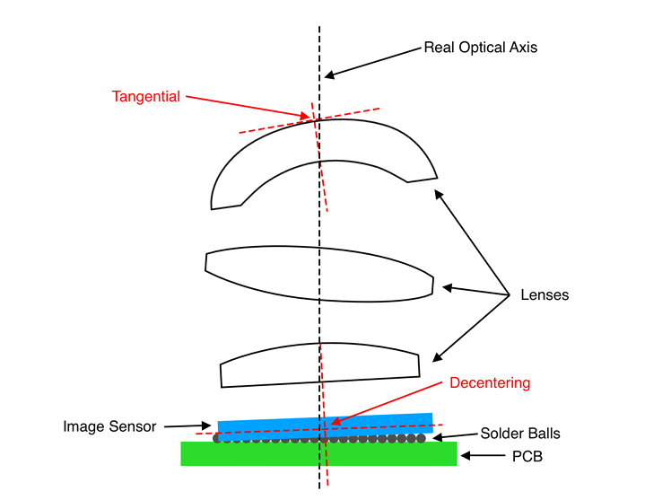
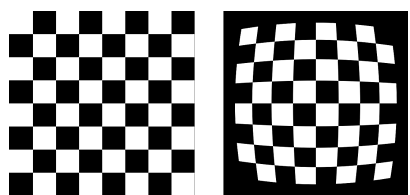
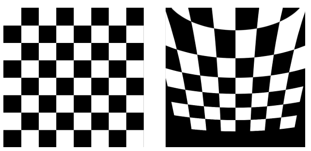
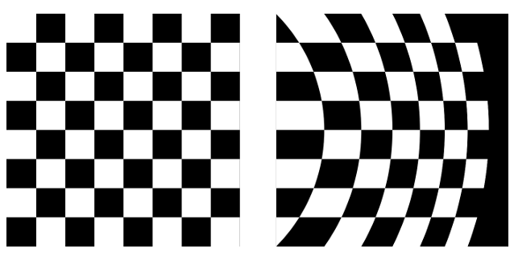
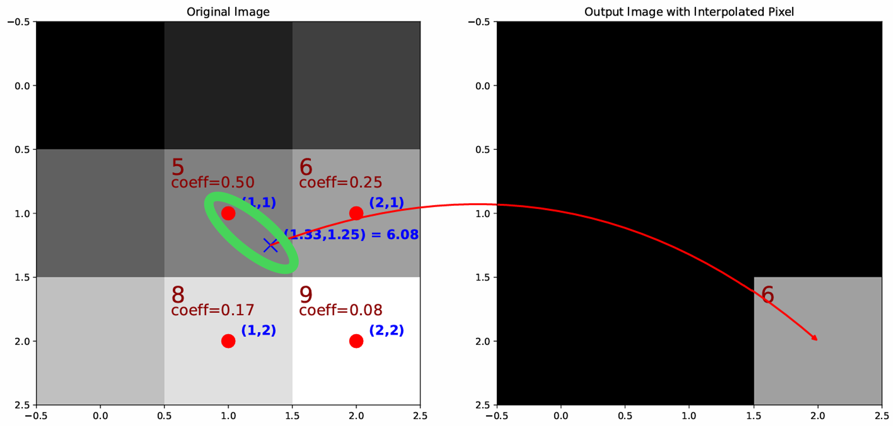
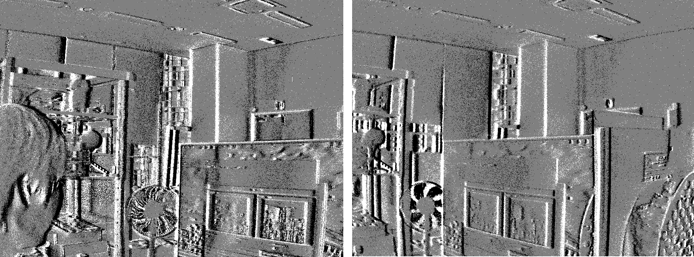
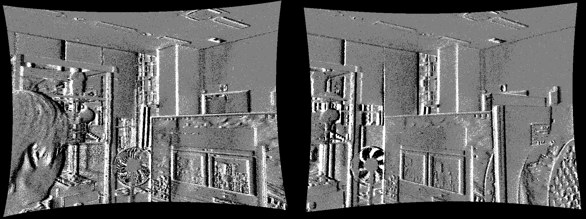
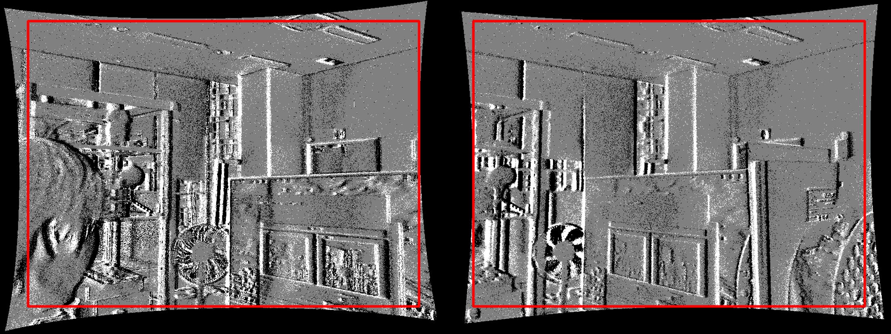

2. DVS 정렬 처리 원리
이 장에서는 렌즈 왜곡이 이벤트 좌표에 어떻게 반영되고, 그 좌표를 실제로 어떻게 보정하는지 설명합니다. 먼저 렌즈 왜곡을 수식으로 표현한 뒤, 보정 화면의 한 위치에 대응하는 원본 센서 좌표를 계산합니다. DVS에서는 그 위치에서 가장 가까운 정수 픽셀을 선택하고, 이 대응 관계를 LUT로 미리 저장해 실시간 처리에 사용합니다.
2.1 실제 카메라에서는 이상적인 위치와 관측 위치가 달라질 수 있습니다
이상적인 카메라 모델에서는 장면의 한 점이 정해진 위치에 투영됩니다. 하지만 실제 카메라에서는 렌즈의 곡률과 조립 오차, 렌즈와 센서의 미세한 어긋남 때문에 같은 점이 이론적인 위치와 다른 픽셀에 기록될 수 있습니다.
캘리브레이션은 이러한 차이를 수치로 구하고, Rectify는 그 값을 이용해 이벤트 좌표를 보정합니다.

2.2 왜곡은 어떤 식으로 좌표를 바꾸는가
렌즈 왜곡은 몇 개의 계수로 표현할 수 있습니다. 아래에서는 화면 중심에서의 거리에 따라 나타나는 방사 왜곡과 렌즈·센서의 어긋남으로 생기는 접선 왜곡을 먼저 살펴보고, 필요한 경우 추가되는 Thin-prism 항까지 순서대로 설명합니다.
2.2.1 방사 왜곡
방사 왜곡은 화면 중심에서 멀어질수록 크게 나타나는 왜곡입니다. 이 때문에 실제 직선이 바깥쪽으로 부풀거나 안쪽으로 휘어 보일 수 있습니다.
아래 식에서는 중심에서의 거리 r을 기준으로 x, y 좌표가 얼마나 이동하는지를 계산합니다.

2.2.2 접선 왜곡
렌즈와 센서의 중심이 정확히 맞지 않거나 서로 조금 기울어져 있으면 왜곡이 한쪽으로 치우쳐 나타날 수 있습니다. p₁, p₂는 이러한 비대칭적인 좌표 이동을 표현합니다.

2.2.3 Thin-prism 항
사용하는 왜곡 모델에 따라 Thin-prism 항이 추가될 수 있습니다. 필요한 경우 이 항도 다른 왜곡 항과 함께 최종 좌표 계산에 반영됩니다.

2.3 보정 출력 좌표에서 원본 센서 좌표를 계산합니다
Rectify는 보정된 화면의 각 위치를 기준으로, 그 위치를 채우기 위해 원본 센서의 어느 좌표를 참조해야 하는지 계산합니다. 아래 세 단계는 하나의 보정 출력 좌표 (u, v)가 원본 센서의 소스 좌표 (uₛ, vₛ)로 연결되는 과정을 보여줍니다.
입력: 보정 화면 좌표 (u, v) → 출력: 원본 센서에서 참조할 좌표 (uₛ, vₛ)
출력 좌표를 정규화 좌표로 변환
초점거리와 주점을 기준으로 픽셀 좌표를 계산에 사용하기 쉬운 정규화 좌표로 바꿉니다.
렌즈 왜곡 모델 적용
앞에서 구한 방사 왜곡과 접선 왜곡을 더하고, 필요한 경우 Thin-prism 항도 함께 반영합니다.
원본 센서의 픽셀 좌표 계산
다시 카메라 내부 파라미터를 적용해 원본 센서에서 참조할 위치 (uₛ, vₛ)를 구합니다.
이 과정을 거치면 보정 화면의 각 좌표마다 원본 센서에서 읽어야 할 위치 하나가 정해집니다.
스테레오 카메라에서는 각 카메라의 렌즈 왜곡을 보정하는 것에 더해, 좌·우 카메라의 상대적인 위치와 방향을 이용한 Stereo Rectification도 함께 적용합니다. 이 과정은 같은 장면의 대응점이 좌·우 영상에서 가능한 한 같은 y 좌표, 즉 같은 epipolar line에 놓이도록 좌표를 맞춥니다. 이후 Stereo Matching에서는 주로 수평 방향으로 대응점을 탐색할 수 있습니다.
2.4 계산된 소스 좌표에서 가장 가까운 DVS 픽셀을 사용합니다
앞 단계에서 계산한 소스 좌표는 (103.2, 198.7)처럼 소수일 수 있습니다. 일반 밝기 영상에서는 주변 픽셀 값을 보간할 수 있지만, DVS 이벤트는 정수 픽셀 위치에서 ON 또는 OFF 상태로 기록됩니다.
NRV Rectify는 계산된 위치에서 가장 가까운 정수 픽셀을 선택합니다. 위 예에서는 (103, 199)가 선택되며, 해당 이벤트의 ON/OFF 상태를 그대로 사용합니다.

2.5 미리 계산한 좌표 대응을 LUT로 저장합니다
앞에서 계산한 출력 좌표와 원본 센서 좌표의 대응 관계는 카메라 설정이 바뀌지 않는 동안 동일하게 사용할 수 있습니다. 따라서 Setup 단계에서 이 관계를 LUT로 미리 저장합니다.
라이브 스트림에서는 복잡한 렌즈 왜곡 수식을 다시 계산하지 않고, LUT에서 대응 좌표를 조회해 이벤트 위치를 변환합니다.
2.6 Valid ROI와 최종 DVS 출력
좌표를 보정하면 일부 위치는 원본 센서 범위 밖을 참조하게 됩니다. 이 위치에는 가져올 이벤트가 없기 때문에 최종 출력에서는 제외합니다.
NRV Rectify는 실제 이벤트를 참조할 수 있는 Valid ROI만 남기며, 잘라낸 결과를 원본 해상도로 다시 확대하지 않습니다.
① 원본 DVS 이벤트
렌즈 왜곡이 포함된 원본 이벤트입니다.

② 좌표 보정 후
왜곡을 펴면 화면 가장자리에 원본 센서에서 값을 가져올 수 없는 영역이 생깁니다.

③ Valid ROI 적용
실제 원본 이벤트를 참조할 수 있는 영역만 남깁니다. Crop된 결과는 다시 확대하지 않습니다.

다음: 3장에서는 캘리브레이션 YAML을 Viewer에 불러와 좌표 맵을 준비하고, Rectify를 활성화해 실제 라이브 DVS 스트림에 적용하는 방법을 설명합니다.
검색어와 일치하는 절 제목이 없습니다.